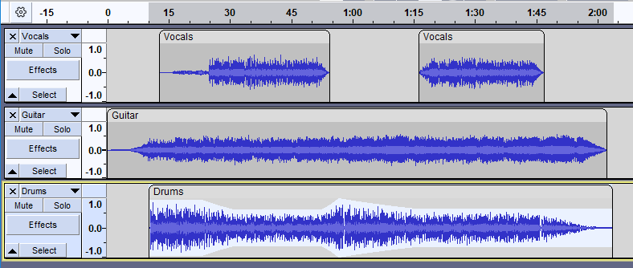
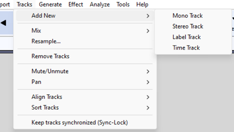
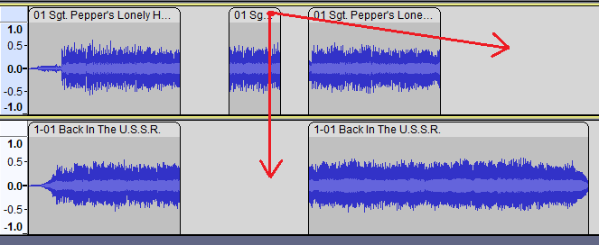
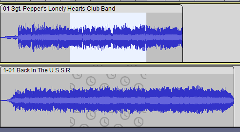

Tutorial - Using Multi-track
- For example, you can add music to your audiobook presentation after you finish reading, and you can sing all the harmony parts of a song by yourself one after the other. You can create a good-quality mixed podcast from performers in several different time zones without Internet distortion.
Multiple Tracks
Different parts of the audio mix are on different 'tracks'. You can add and remove tracks and adjust the tracks individually or together.
- 
Creating Multiple Tracks
You can add new empty tracks using the edit menu:
- 
These new tracks 'stack up' one above the other. You can record into these tracks  , or generate sound into them using the menu. When you click
, or generate sound into them using the menu. When you click  you hear the tracks mixed together, that is, all the tracks at the same time.
you hear the tracks mixed together, that is, all the tracks at the same time.
You can also record directly to a new track using record to new track  which is obtained by holding shift down before clicking the record button.
which is obtained by holding shift down before clicking the record button.
Moving Audio between Tracks
You can move clips in one track, and between tracks, by clicking and dragging in the Clip-Handle drag-bar.
- 
For more details see Audacity_Tracks_and_Clips
Listening to the Mix

- button to temporarily silence just this one track.
- button to temporarily play only this one track on its own.
- Gain slider (with + and -) for adjusting the volume of this track
- Pan slider (with L and R) to position the audio of this track 'Left' or 'Right' in the stereo sound stage.
Keeping Tracks Synchronized
When you select audio, you can select in multiple tracks, and then a cut will remove the selected audio in all tracks and keep the audio synchronized.
You can also lock the various tracks together so that that they stay synchronized, using . Cutting and pasting audio will now affect all tracks together. This is shown by the clock icon in the selections, which indicates that Sync-Lock has selected additional tracks.
- 
- A pair of Sync-Locked mono tracks: selection extends automatically to the second track
For more details see Sync-Locked_Track_Groups
Auto Duck
Auto Duck reduces (ducks) the volume of one or more selected tracks whenever the volume of a single unselected "control track" placed underneath reaches a particular threshold level.The effect can be used to create voice-overs for podcasts or DJ sets, for automatic "ramping" of background music in radio productions and for turning down a voice in original language as soon as its translation kicks in.
For more details see Auto Duck
To Learn More
- How to edit a narration to fit the pace of the background music, and fade down the music so your listeners can hear your narration, useful in particular for podcasts.
- A set of tutorials on making multi-track recordings, using three different specialist audio interfaces or using your computer's on-board sound card.